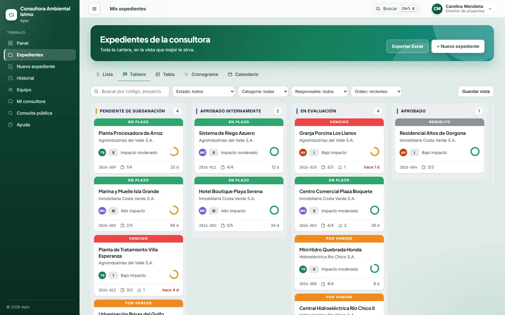
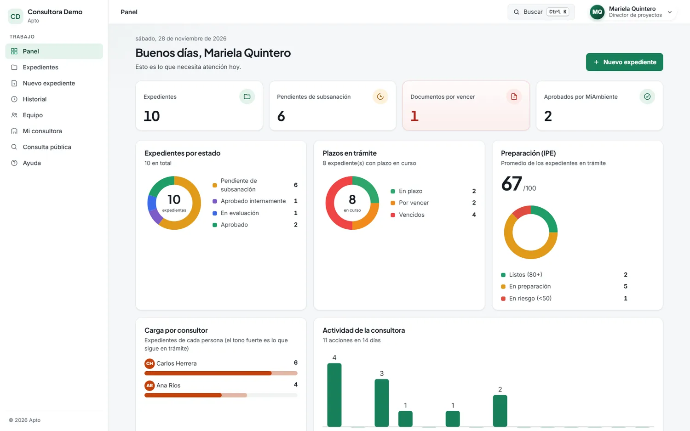
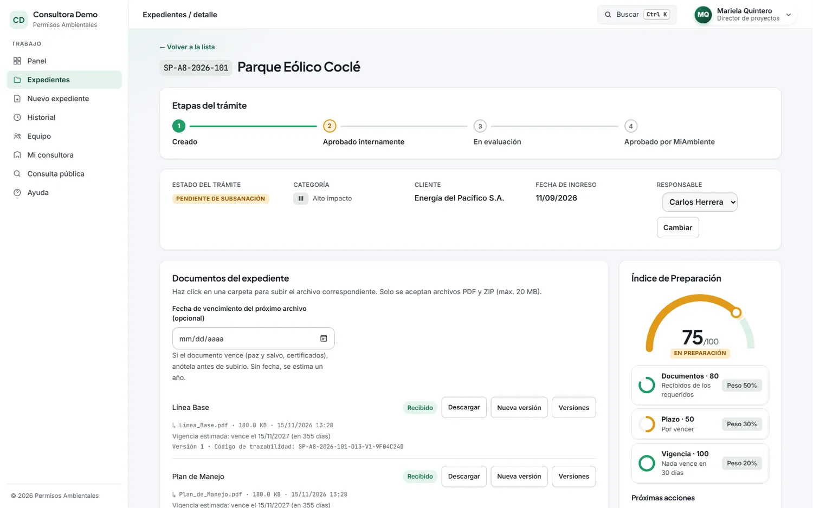
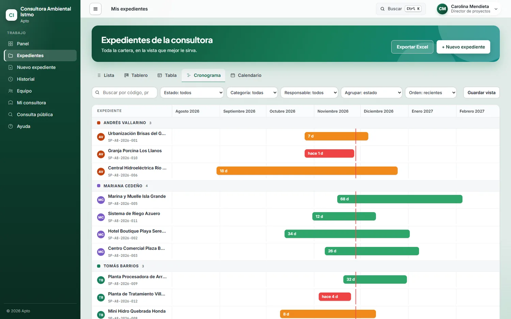

«Se nos venció un plazo y nadie se dio cuenta.»
Lo resolvemos así: Semáforo con los días exactos de cada expediente, aviso cuando entra en «por vencer» y el límite legal en su Google Calendar u Outlook.
Para: Directores y consultoresReúna cada estudio de impacto ambiental en un solo lugar: sepa qué documento falta, cuánto queda de cada plazo y qué expediente atender hoy. Y mantenga informados a sus clientes sin una sola llamada.

Los problemas más comunes en la gestión de estudios de impacto ambiental, y lo que cambia con la plataforma.
Lo resolvemos así: Semáforo con los días exactos de cada expediente, aviso cuando entra en «por vencer» y el límite legal en su Google Calendar u Outlook.
Para: Directores y consultoresLo resolvemos así: La lista de documentos sale de la categoría del proyecto y un índice de 0 a 100 le dice qué falta y qué hacer después.
Para: ConsultoresLo resolvemos así: Un panel que ordena la cartera por urgencia y muestra la próxima acción de cada expediente.
Para: Directores de proyectosLo resolvemos así: Cada archivo queda como una versión con código y huella digital. Nada se sobrescribe ni se borra.
Para: ConsultoresLo resolvemos así: Su cliente tiene cuenta propia y ve el estado y los avisos de sus trámites, también desde el celular.
Para: Clientes de la consultoraLo resolvemos así: Historial de solo lectura con quién hizo qué y cuándo, y el motivo escrito de cada aprobación interna.
Para: Directores de proyectosLa consultora trabaja mejor y su cliente lo nota.
Necesita ver toda la cartera y saber dónde está el riesgo, sin preguntar uno por uno.
Necesita armar expedientes completos sin perseguir archivos ni fechas.
Quiere saber cómo va su permiso sin depender de una llamada.
Y cualquier persona puede consultar el estado de un proyecto con su código, si la consultora decide publicarlo.
Su equipo, su marca y sus expedientes, separados de los de cualquier otra empresa.
Capturas reales del sistema con expedientes de demostración.

Cada expediente abierto recibe un Índice de Preparación de 0 a 100. El panel los ordena del menos preparado al más listo y dice cuál es la siguiente acción en cada uno.

La plataforma arma la lista de documentos que exige la categoría del proyecto y revisa cada archivo antes de guardarlo.

El índice no es una caja negra: muestra cuánto aporta cada factor y qué hacer para subirlo.

Desde que el expediente se somete, el plazo legal de respuesta corre en días hábiles, sin fines de semana ni feriados de Panamá.

El director de proyectos ve todos los expedientes; cada consultor, solo los suyos. Busque por código, proyecto o promotor y filtre por estado.

El cliente entra con la cuenta que le crea su consultor y ve solo los trámites de su empresa, con los avisos de plazo.
Línea base, foro público, cartografía: el estudio se arma afuera y se entrega adentro. La plataforma junta todo en un solo expediente, con su plazo y su evidencia.
Escriba el código del expediente. Solo se muestra información pública, sin documentos ni datos personales, conforme a la Ley 81 de 2019.
No. La plataforma organiza el trabajo dentro de la consultora para que el estudio llegue completo. La evaluación y la resolución siguen siendo de MiAmbiente.
PDF y ZIP de hasta 20 MB. La cartografía va en ZIP.
No se borra: sube una versión nueva y la anterior queda como evidencia.
No. Solo ve los expedientes asociados a su correo.
No. Cada consultora trabaja en su propio espacio: sus usuarios y expedientes están separados de los de cualquier otra empresa.
El director de proyectos genera un enlace de invitación de un solo uso (vence en 72 horas) y cada persona crea su cuenta y elige su contraseña.
Con uno de sus códigos de recuperación puede fijar una nueva sin necesidad de correo. Si no los guardó, su director de proyectos le genera una contraseña temporal.
Sí. El director de proyectos elige el nombre, el color y el logo, que aparecen en el menú, en el resumen PDF y en la consulta pública.
Sí. Se hace un respaldo diario de la base de datos y de los documentos, que el administrador de la plataforma puede verificar y restaurar.
Plazos bajo control, expedientes completos y clientes informados. Su consultora se da de alta con la administración de la plataforma y, desde ahí, invita a cada persona de su equipo con un enlace de un solo uso.